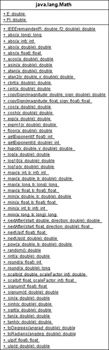

18.3 Die Eigenschaften der Klasse Math
Die Klasse java.lang.Math ist eine typische Utility-Klasse, die nur statische Methoden (beziehungsweise Attribute als Konstanten) deklariert. Mit dem privaten Konstruktor lassen sich (so leicht) keine Exemplare von Math erzeugen.
Abbildung 18.1: UML-Diagramm der Klasse »Math«
18.3.1 Attribute
Die Math-Klasse besitzt zwei statische Attribute:
class java.lang.Math |
- static final double E
Die Eulersche Zahl[220](Die irrationale Zahl e ist nach dem schweizerischen Mathematiker Leonhard Euler (1707–1783) benannt.) e = 2.7182818284590452354 - static final double PI
Die Kreiszahl Pi[221](Wer noch auf der Suche nach einer völlig unsinnigen Information ist: Die einmilliardste Stelle hinter dem Komma von Pi ist eine Neun.) = 3.14159265358979323846
18.3.2 Absolutwerte und Vorzeichen
Die zwei statischen abs()-Methoden liefern den Betrag des Arguments (mathematische Betragsfunktion: y = |x|). Sollte ein negativer Wert als Argument übergeben werden, wandelt ihn abs() in einen positiven Wert um.
Eine spezielle Methode ist auch copySign(). Sie ermittelt das Vorzeichen einer Fließkommazahl und setzt dieses Vorzeichen bei einer anderen.
class java.lang.Math |
- static int abs(int x)
- static long abs(long x)
- static float abs(float x)
- static double abs(double x)
- static double copySign(double magnitude, double sign)
- static float copySign(float magnitude, float sign)
Liefert magnitude als Rückgabe, aber mit dem Vorzeichen von sign.
| Hinweis |
|
Es gibt genau einen Wert, auf den Math.abs(int) keine positive Rückgabe liefern kann: |
Vorzeichen erfragen
Die statische Methode signum(value) liefert eine numerische Rückgabe für das Vorzeichen von value, und zwar +1 für positive, –1 für negative Zahlen, und 0 für 0. Die Methode ist nicht ganz logisch auf die Klassen Math für Fließkommazahlen und Integer/Long für Ganzzahlen verteilt:
- java.lang.Integer.signum(int i)
- java.lang.Long.signum(long i)
- java.lang.Math.signum(double d)
- java.lang.Math.signum(float f)
18.3.3 Maximum/Minimum
Die statischen max()-Methoden liefern den größeren der übergebenen Werte. Die statischen min()-Methoden liefern den kleineren von zwei Werten als Rückgabewert.
class java.lang.Math |
- static int max(int x, int y)
- static long max(long x, long y)
- static float max( float x, float y )
- static double max(double x, double y)
- static int min(int x, int y)
- static long min(long x, long y)
- static float min(float x, float y)
- static double min(double x, double y)
18.3.4 Runden von Werten
Für die Rundung von Werten bietet die Klasse Math fünf statische Methoden:
class java.lang.Math |
- static double ceil(double a)
- static double floor(double a)
- static int round(float a)
- static long round(double a)
- static double rint(double a)
Auf- und Abrunden mit ceil() und floor()
Die statische Methode ceil() dient zum Aufrunden und liefert die nächsthöhere Ganzzahl (jedoch als double, nicht als long), wenn die Zahl nicht schon eine ganze Zahl ist; die statische Methode floor() rundet auf die nächstniedrigere Ganzzahl ab:
Listing 18.1: RoundingDemo.java, Ausschnitt
System.out.println( Math.ceil(-99.1) ); // –99.0
System.out.println( Math.floor(-99.1) ); // –100.0
System.out.println( Math.ceil(-99) ); // –99.0
System.out.println( Math.floor(-99) ); // –99.0
System.out.println( Math.ceil(-.5) ); // –0.0
System.out.println( Math.floor(-.5) ); // –1.0
System.out.println( Math.ceil(-.01) ); // –0.0
System.out.println( Math.floor(-.01) ); // –1.0
System.out.println( Math.ceil(0.1) ); // 1.0
System.out.println( Math.floor(0.1) ); // 0.0
System.out.println( Math.ceil(.5) ); // 1.0
System.out.println( Math.floor(.5) ); // 0.0
System.out.println( Math.ceil(99) ); // 99.0
System.out.println( Math.floor(99) ); // 99.0
Die genannten statischen Methoden haben auf ganze Zahlen keine Auswirkung.
Kaufmännisches Runden mit round()
Die statischen Methoden round(double) und round(float) runden kaufmännisch auf die nächste Ganzzahl vom Typ long beziehungsweise int. Ganze Zahlen werden nicht aufgerundet. Wir können round() als Gegenstück zur Typumwandlung (long) doublevalue einsetzen:
Listing 18.2: RoundingDemo.java, Ausschnitt
System.out.println( Math.round(1.01) ); // 1
System.out.println( Math.round(1.4) ); // 1
System.out.println( Math.round(1.5) ); // 2
System.out.println( Math.round(1.6) ); // 2
System.out.println( (int) 1.6 ); // 1
System.out.println( Math.round(30) ); // 30
System.out.println( Math.round(-2.1) ); // –2
System.out.println( Math.round(-2.9) ); // –3
System.out.println( (int) –2.9 ); // –2
| Beispiel |
|
Die Math.round()-Methode ist in Java ausprogrammiert. Sie addiert auf den aktuellen Parameter 0,5 und übergibt das Ergebnis der statischen floor()-Methode: public static long round( double a ) { |
Gerechtes Runden rint()
rint() ist mit round() vergleichbar, nur ist es im Gegensatz zu round() gerecht, was bedeutet, dass rint() bei 0,5 in Abhängigkeit davon, ob die benachbarte Zahl ungerade oder gerade ist, auf- oder abrundet:
Listing 18.3: RoundingDemo.java, Ausschnitt
System.out.println( Math.round(-1.5) ); // –1
System.out.println( Math.rint( –1.5) ); // –2.0
System.out.println( Math.round(-2.5) ); // –2
System.out.println( Math.rint( –2.5) ); // –2.0
System.out.println( Math.round( 1.5) ); // 2
System.out.println( Math.rint( 1.5) ); // 2.0
System.out.println( Math.round( 2.5) ); // 3
System.out.println( Math.rint( 2.5) ); // 2.0
Mit einem konsequenten Auf- oder Abrunden pflanzen sich natürlich auch Fehler ungeschickter fort als mit dieser 50/50-Strategie.
| Beispiel |
|
Die statische rint()-Methode lässt sich auch einsetzen, wenn Zahlen auf zwei Nachkommastellen gerundet werden sollen. Ist d vom Typ double, so ergibt der Ausdruck Math.rint(d*100.0)/100.0 die gerundete Zahl. |
Listing 18.4: Round2Scales.java
class Round2Scales
{
public static double roundScale2( double d )
{
return Math.rint( d * 100 ) / 100.;
}
public static void main( String[] args )
{
System.out.println( roundScale2(+1.341 ) ); // 1.34
System.out.println( roundScale2(–1.341 ) ); // –1.34
System.out.println( roundScale2(+1.345 ) ); // 1.34
System.out.println( roundScale2(–1.345 ) ); // –1.34
System.out.println( roundScale2(+1.347 ) ); // 1.35
System.out.println( roundScale2(–1.347 ) ); // –1.35
}
}
Arbeiten wir statt mit rint() mit round(), wird die Zahl 1,345 nicht auf 1,34, sondern auf 1,35 gerundet. Wer nun Lust hat, etwas auszuprobieren, darf testen, wie der Formatstring »%.2f« bei printf() rundet.
18.3.5 Wurzel- und Exponentialmethoden
Die Math-Klasse bietet weiterhin Methoden zum Berechnen der Wurzel und weitere Exponentialmethoden.
class java.lang.Math |
- static double sqrt(double x)
Liefert die Quadratwurzel von x; sqrt steht für square root. - static double cbrt(double a)
Berechnet die dritte Wurzel aus a. - static double hypot(double x, double y)
Berechnet die Wurzel aus x2 + y2, also den euklidischen Abstand. Könnte als sqrt(x*x, y*y) umgeschrieben werden, doch hypot() bietet eine bessere Genauigkeit und Performance. - static double scalb(double d, double scaleFactor)
Liefert d mal 2 hoch scaleFactor. Kann prinzipiell auch als d * Math.pow(2, scaleFactor) geschrieben werden, doch scalb() bietet eine bessere Performance. - static double exp(double x)
Liefert den Exponentialwert von x zur Basis e (der Eulerschen Zahl e = 2,71828...), also ex. - static double expm1(double x)
Liefert den Exponentialwert von x zur Basis e minus 1, also ex – 1. Berechnungen nahe null kann expm1(x) + 1 präziser ausdrücken als exp(x). - static double pow(double x, double y)
Liefert den Wert der Potenz xy. Für ganzzahlige Werte gibt es keine eigene Methode.
Die Frage nach dem 0.0/0.0 und 0.0^0.0 *
Wie wir wissen, ist 0.0/0.0 ein glattes NaN. Im Unterschied zu den Ganzzahlwerten bekommen wir hier allerdings keine Exception, denn dafür ist extra die Spezialzahl NaN eingeführt worden. Interessant ist die Frage, was denn (long)(double)(0.0/0.0) ergibt. Die Sprachdefinition sagt hier in §5.1.3, dass die Konvertierung eines Fließkommawerts NaN in ein int 0 oder long 0 ergibt.[222](Leider gab es in den ersten Versionen der JVM einen Fehler, sodass Long.MAX_VALUE anstelle von 0.0 produziert wurde. Dieser Fehler ist aber inzwischen behoben.)
Eine weitere spannende Frage ist das Ergebnis von 0.0^0.0. Um allgemeine Potenzen zu berechnen, wird die statische Funktion Math.pow(double a, double b) eingesetzt. Wir erinnern uns aus der Schulzeit daran, dass wir die Quadratwurzel einer Zahl ziehen, wenn der Exponent b genau 1/2 ist. Doch jetzt wollen wir wissen, was denn gilt, wenn a = b = 0 gilt. §20.11.13 der Sprachdefinition fordert, dass das Ergebnis immer 1.0 ist, wenn der Exponent b gleich –0.0 oder 0.0 ist. Es kommt also in diesem Fall überhaupt nicht auf die Basis a an. In einigen Algebra-Büchern wird 0^0 als undefiniert behandelt. Es macht aber durchaus Sinn, 0^0 als 1 zu definieren, da es andernfalls viele Sonderbehandlungen für 0 geben müsste.[223](Hier schreiben die Autoren R. Graham, D. Knuth, O. Patashnik des Buchs Concrete Mathematics: »Some textbooks leave the quantity 0^0 undefined, because the functions x^0 and 0^x have different limiting values when x decreases to 0. But this is a mistake. We must define x^0 = 1 for all x, if the binomial theorem is to be valid when x=0, y=0, and/or x=-y. The theorem is too important to be arbitrarily restricted! By contrast, the function 0^x is quite unimportant.«, Addison-Wesley, 1994, ISBN 0-201-55802-5.)
18.3.6 Der Logarithmus *
Der Logarithmus ist die Umkehrfunktion der Exponentialfunktion. Die Exponentialfunktion und der Logarithmus hängen durch folgende Beziehung zusammen: Ist y = ax, dann ist x = loga(y). Der Logarithmus, den Math.log() berechnet, ist der natürliche Logarithmus zur Basis e. In der Mathematik wird dieser mit »ln« angegeben (logarithmus naturalis). Logarithmen mit der Basis 10 heißen dekadische oder briggsche Logarithmen und werden mit »lg« abgekürzt; der Logarithmus zur Basis 2 (binärer Logarithmus, dualer Logarithmus) wird mit »lb« abgekürzt. In Java gibt es die statische Methode log10() für den briggschen Logarithmus lg, nicht aber für den binären Logarithmus lb, der weiterhin nachgebildet werden muss. Allgemein gilt folgende Umrechnung: logb(x) = loga(x) / loga(b).
| Beispiel |
|
Eine eigene statische Methode soll den Logarithmus zur Basis 2 berechnen: public static double lb( double x ) |
|
Da Math.log(2) konstant ist, sollte dieser Wert aus Performance-Gründen in einer Konstanten gehalten werden. |
class java.lang.Math |
- static double log(double a)
Berechnet von a den Logarithmus zur Basis e. - static double log10(double a)
Liefert von a den Logarithmus zur Basis 10. - static double log1p(double x)
Liefert log(x) + 1.
18.3.7 Rest der ganzzahligen Division *
Neben dem Restwert-Operator %, der den Rest der Division berechnet, gibt es auch eine statische Methode Math.IEEEremainder().
Listing 18.5: IEEEremainder.java, main()
double a = 44.0;
double b = 2.2;
System.out.println( a / b ); // 20.0
System.out.println( a % b ); // 2.1999999999999966
System.out.println( Math.IEEEremainder( a, b ) ); // –3.552713678800501E-15
Das zweite Ergebnis ist mit der mathematischen Ungenauigkeit fast 2,2, aber etwas kleiner, sodass der Algorithmus nicht noch einmal 2,2 abziehen konnte. Die statische Methode IEEEremainder() liefert ein Ergebnis nahe null (–0,000000000000003552713 6788005), was besser ist, denn 44,0 lässt sich ohne Rest durch 2,2 teilen, also wäre der Rest eigentlich 0.
class java.lang.Math |
- static double IEEEremainder(double dividend, double divisor)
Liefert den Rest der Division von Dividend und Divisor, so wie es der IEEE 754-Standard vorschreibt.
Eine eigene statische Methode, die mitunter bessere Ergebnisse liefert – mit den Werten 44 und 2,2 wirklich 0,0 –, ist die folgende:
public static double remainder( double a, double b )
{
return Math.signum(a) *
(Math.abs(a) – Math.abs(b) * Math.floor(Math.abs(a)/Math.abs(b)));
}
18.3.8 Winkelmethoden *
Die Math-Klasse stellt einige winkelbezogene Methoden und ihre Umkehrungen zur Verfügung. Im Gegensatz zur bekannten Schulmathematik werden die Winkel für sin(), cos(), tan() im Bogenmaß (2 entspricht einem Vollkreis) und nicht im Gradmaß (360 Grad entspricht einem Vollkreis) übergeben.
class java.lang.Math |
- static double sin(double x)
- static double cos(double x)
- static double tan(double x)
Liefert den Sinus/Kosinus/Tangens von x.
Arcus-Methoden
Die Arcus-Methoden realisieren die Umkehrfunktionen zu den trigonometrischen Methoden. Das Argument ist kein Winkel, sondern zum Beispiel bei asin() der Sinuswert zwischen –1 und 1. Das Ergebnis ist dann ein Winkel im Bogenmaß, etwa zwischen –/2 und /2.
class java.lang.Math |
- static double asin(double x)
- static double acos(double x)
- static double atan(double x)
Liefert den Arcus-Sinus, Arcus-Kosinus beziehungsweise Arcus-Tangens von x. - static atan2(double x, double y)
Liefert bei der Konvertierung von Rechteckkoordinaten in Polarkoordinaten den Winkel theta, also eine Komponente des Polarkoordinaten-Tupels. Die statische Methode berücksichtigt das Vorzeichen der Parameter x und y, und der freie Schenkel des Winkels befindet sich im richtigen Quadranten.
Hyperbolicus-Methoden bietet Java über sinh(), tanh() und cosh().
Umrechnungen von Gradmaß in Bogenmaß
Zur Umwandlung eines Winkels von Gradmaß in Bogenmaß und umgekehrt existieren zwei statische Methoden:
class java.lang.Math |
- static double toRadians(double angdeg)
Wandelt Winkel von Gradmaß in Bogenmaß um. - static double toDegrees(double angrad)
Wandelt Winkel von Bogenmaß in Gradmaß um.
18.3.9 Zufallszahlen
Positive Gleitkomma-Zufallszahlen zwischen größer gleich 0,0 und echt kleiner 1,0 liefert die statische Methode Math.random(). Die Rückgabe ist double, und eine Typanpassung auf int führt immer zum Ergebnis 0.
Möchten wir Werte in einem anderen Wertebereich haben, ist es eine einfache Lösung, die Zufallszahlen von Math.random() durch Multiplikation (Skalierung) auf den gewünschten Wertebereich auszudehnen und per Addition (ein Offset) geeignet zu verschieben. Um ganzzahlige Zufallszahlen zwischen min (inklusiv) und max (inklusiv) zu erhalten, schreiben wir:
Listing 18.6: RandomIntInRange.java
public static long random( long min, long max )
{
return min + Math.round( Math.random() * (max – min) );
}
Eine Alternative bietet der direkte Einsatz der Klasse Random und der Objektmethode nextInt(n).
Ihr Kommentar
Wie hat Ihnen das <openbook> gefallen? Wir freuen uns immer über Ihre freundlichen und kritischen Rückmeldungen.
 Jetzt bestellen
Jetzt bestellen


{kind=link}